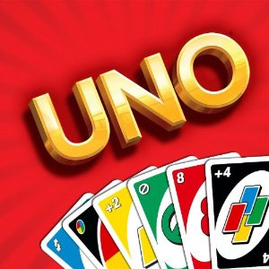

Draw Pile --- Discard Pile

The discard Color:
Users Hand
Rules of Christopher Nguyen's UNO Game
At the beginning of the game you draw 7 cards. To place a card in discard pile you must match the cards value or card color in your hand with the discard Pile card value or color.
Your goal is to empty your hand before the AI does. If you don't have a card that matches the value or color then draw a card by clicking the image under draw pile and if you still can't do anything just click the pass button.
There are 4 different color's R for Red, B for Blue, Y for Yellow and G for Green
Special Cards
Wild Card

Currently this is called the Wild card it allows the player to change the discardColor to anything. It does not have to match discard Value or discard Color of the discard card.
Skip Card
This card can be used by the AI/Player to skip each others turn and go again. It can only be used when its card Color matches the discardColor.
Disclaimer!

Currently these two cards do not have any special features, currently they act like normal card. the reverse card is the value of 11 while the +2 meaning draw 2 card acts as the value of 12.